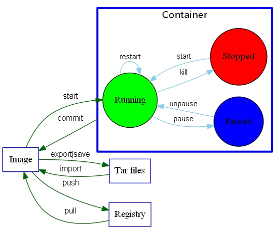

<!DOCTYPE html>
<html>
<head><meta name="generator" content="Hexo 3.8.0">
  <meta charset="utf-8">
  
  <title>docker学习总结 | youxiachai</title>
  <meta name="viewport" content="width=device-width, initial-scale=1, maximum-scale=1">
  <meta name="description" content="前言学习docker有一周了，学习主要看华为写的《Docker进阶与实践》，还有yeasy 的《Docker 从入门到实践》，期间还参考了不少官网的内容，对于，docker现在应该算是入门了，起码基本的使用现在是没什么问题了。从上一年开始关注docker，到今天入门了，终于填好了一个坑，特别写篇笔记，记录自己学docker的心得。">
<meta name="keywords" content="docker">
<meta property="og:type" content="article">
<meta property="og:title" content="docker学习总结">
<meta property="og:url" content="http://blog.gfdsa.net/2016/02/29/docker/docker_summary/index.html">
<meta property="og:site_name" content="youxiachai">
<meta property="og:description" content="前言学习docker有一周了，学习主要看华为写的《Docker进阶与实践》，还有yeasy 的《Docker 从入门到实践》，期间还参考了不少官网的内容，对于，docker现在应该算是入门了，起码基本的使用现在是没什么问题了。从上一年开始关注docker，到今天入门了，终于填好了一个坑，特别写篇笔记，记录自己学docker的心得。">
<meta property="og:locale" content="zh-CN">
<meta property="og:image" content="http://blog.gfdsa.net/2016/02/29/docker/docker_summary/14566909261190.jpg">
<meta property="og:updated_time" content="2019-05-11T17:21:27.283Z">
<meta name="twitter:card" content="summary">
<meta name="twitter:title" content="docker学习总结">
<meta name="twitter:description" content="前言学习docker有一周了，学习主要看华为写的《Docker进阶与实践》，还有yeasy 的《Docker 从入门到实践》，期间还参考了不少官网的内容，对于，docker现在应该算是入门了，起码基本的使用现在是没什么问题了。从上一年开始关注docker，到今天入门了，终于填好了一个坑，特别写篇笔记，记录自己学docker的心得。">
<meta name="twitter:image" content="http://blog.gfdsa.net/2016/02/29/docker/docker_summary/14566909261190.jpg">
  
    <link rel="alternative" href="/atom.xml" title="youxiachai" type="application/atom+xml">
  
  
    <link rel="icon" href="/favicon.png">
  
  <link rel="stylesheet" href="/css/style.css">
  
<!-- Google Analytics -->
<script type="text/javascript">
(function(i,s,o,g,r,a,m){i['GoogleAnalyticsObject']=r;i[r]=i[r]||function(){
(i[r].q=i[r].q||[]).push(arguments)},i[r].l=1*new Date();a=s.createElement(o),
m=s.getElementsByTagName(o)[0];a.async=1;a.src=g;m.parentNode.insertBefore(a,m)
})(window,document,'script','//www.google-analytics.com/analytics.js','ga');

ga('create', 'UA-31013178-1', 'auto');
ga('send', 'pageview');

</script>
<!-- End Google Analytics -->


   
<script>
var _hmt = _hmt || [];
(function() {
  var hm = document.createElement("script");
  hm.src = "//hm.baidu.com/hm.js?75f5de70aa60d9d2b194636cd8b7b621";
  var s = document.getElementsByTagName("script")[0]; 
  s.parentNode.insertBefore(hm, s);
})();
</script>

  <script src="http://libs.baidu.com/jquery/1.9.0/jquery.js"></script>
</head></html>
<body>
  <div id="container">
    <div class="left-col">
    <div class="overlay"></div>
<div class="intrude-less">
	<header id="header" class="inner">
		<div class="profilepic">
			
		</div>

		<hgroup>
		  <h1 class="header-author"><a href="/">youxiachai</a></h1>
		</hgroup>

		
		<p class="header-subtitle">一个在IT业界打杂的程序猿</p>
		

		
			<div class="switch-btn">
				<div class="icon">
					<div class="icon-ctn">
						<div class="icon-wrap icon-house" data-idx="0">
							<div class="birdhouse"></div>
							<div class="birdhouse_holes"></div>
						</div>
						<div class="icon-wrap icon-ribbon hide" data-idx="1">
							<div class="ribbon"></div>
						</div>
						
						
						<div class="icon-wrap icon-me hide" data-idx="3">
							<div class="user"></div>
							<div class="shoulder"></div>
						</div>
						
					</div>
					
				</div>
				<div class="tips-box hide">
					<div class="tips-arrow"></div>
					<ul class="tips-inner">
						<li>菜单</li>
						<li>标签</li>
						
						
						<li>关于我</li>
						
					</ul>
				</div>
			</div>
		

		<div class="switch-area">
			<div class="switch-wrap">
				<section class="switch-part switch-part1">
					<nav class="header-menu">
						<ul>
						
							<li><a href="/">主页</a></li>
				        
							<li><a href="/archives">所有文章</a></li>
				        
						</ul>
					</nav>
					<nav class="header-nav">
						<div class="social">
							
								<a class="github" target="_blank" href="https://github.com/youxiachai" title="github">github</a>
					        
								<a class="weibo" target="_blank" href="http://weibo.com/youxiachai/" title="weibo">weibo</a>
					        
								<a class="facebook" target="_blank" href="https://www.facebook.com/youxilua" title="facebook">facebook</a>
					        
								<a class="google" target="_blank" href="https://plus.google.com/u/0/+%E4%B8%8E%E9%82%BB%E5%BA%84/about/op/svuwn" title="google">google</a>
					        
								<a class="twitter" target="_blank" href="https://twitter.com/Tom_achai" title="twitter">twitter</a>
					        
						</div>
					</nav>
				</section>
				
				
				<section class="switch-part switch-part2">
					<div class="widget tagcloud">
						<a href="/tags/MQTT/" style="font-size: 10px;">MQTT</a> <a href="/tags/android/" style="font-size: 18.57px;">android</a> <a href="/tags/angular/" style="font-size: 10px;">angular</a> <a href="/tags/appframework/" style="font-size: 10px;">appframework</a> <a href="/tags/docker/" style="font-size: 10px;">docker</a> <a href="/tags/game/" style="font-size: 11.43px;">game</a> <a href="/tags/hexo/" style="font-size: 11.43px;">hexo</a> <a href="/tags/html5/" style="font-size: 11.43px;">html5</a> <a href="/tags/http/" style="font-size: 10px;">http</a> <a href="/tags/iOS/" style="font-size: 12.86px;">iOS</a> <a href="/tags/java/" style="font-size: 10px;">java</a> <a href="/tags/kindle/" style="font-size: 10px;">kindle</a> <a href="/tags/kotlin/" style="font-size: 10px;">kotlin</a> <a href="/tags/life/" style="font-size: 11.43px;">life</a> <a href="/tags/mac/" style="font-size: 10px;">mac</a> <a href="/tags/math/" style="font-size: 10px;">math</a> <a href="/tags/node/" style="font-size: 20px;">node</a> <a href="/tags/nodejs/" style="font-size: 10px;">nodejs</a> <a href="/tags/phonegap/" style="font-size: 10px;">phonegap</a> <a href="/tags/pi/" style="font-size: 10px;">pi</a> <a href="/tags/pomelo/" style="font-size: 15.71px;">pomelo</a> <a href="/tags/sequelize/" style="font-size: 10px;">sequelize</a> <a href="/tags/summary/" style="font-size: 14.29px;">summary</a> <a href="/tags/unity3d/" style="font-size: 12.86px;">unity3d</a> <a href="/tags/weekly/" style="font-size: 17.14px;">weekly</a> <a href="/tags/社科人文/" style="font-size: 10px;">社科人文</a>
					</div>
				</section>
				
				
				

				
				
				<section class="switch-part switch-part3">
				
					我是谁，我从哪里来，我到哪里去？我就是我，是颜色不一样的吃货…
				</section>
				
			</div>
		</div>
	</header>				
</div>
    </div>
    <div class="mid-col">
      <nav id="mobile-nav">
  	<div class="overlay"></div>
	<div class="intrude-less">
		<header id="header" class="inner">
			<div class="profilepic">
				
			</div>

			<hgroup>
			  <h1 class="header-author"><a href="/">youxiachai</a></h1>
			</hgroup>
			
			<p class="header-subtitle">一个在IT业界打杂的程序猿</p>
			
			<nav class="header-menu">
				<ul>
				
					<li><a href="/">主页</a></li>
		        
					<li><a href="/archives">所有文章</a></li>
		        
		        <div class="clearfix"></div>
				</ul>
			</nav>
			<nav class="header-nav">
				<div class="social">
					
						<a class="github" target="_blank" href="https://github.com/youxiachai" title="github">github</a>
			        
						<a class="weibo" target="_blank" href="http://weibo.com/youxiachai/" title="weibo">weibo</a>
			        
						<a class="facebook" target="_blank" href="https://www.facebook.com/youxilua" title="facebook">facebook</a>
			        
						<a class="google" target="_blank" href="https://plus.google.com/u/0/+%E4%B8%8E%E9%82%BB%E5%BA%84/about/op/svuwn" title="google">google</a>
			        
						<a class="twitter" target="_blank" href="https://twitter.com/Tom_achai" title="twitter">twitter</a>
			        
				</div>
			</nav>
		</header>				
	</div>
</nav>
      <article id="post-docker/docker_summary" class="article article-type-post" itemscope itemprop="blogPost">
  
    <div class="article-meta">
      <a href="/2016/02/29/docker/docker_summary/" class="article-date">
  	<time datetime="2016-02-28T16:00:00.000Z" itemprop="datePublished">2月 29 2016</time>
</a>
      
      
  <ul class="article-tag-list"><li class="article-tag-list-item"><a class="article-tag-list-link" href="/tags/docker/">docker</a></li></ul>

    </div>
  
  <div class="article-inner">
    
      <input type="hidden" class="isFancy">
    
    
      <header class="article-header">
        
  
    <h1 class="article-title" itemprop="name">
      docker学习总结
    </h1>
  

      </header>
    
    <div class="article-entry" itemprop="articleBody">
      
        <h2 id="前言"><a href="#前言" class="headerlink" title="前言"></a>前言</h2><p>学习docker有一周了，学习主要看华为写的《Docker进阶与实践》，还有<a href="https://github.com/yeasy/docker_practice" target="_blank" rel="noopener">yeasy</a> 的《Docker 从入门到实践》，期间还参考了不少官网的内容，对于，docker现在应该算是入门了，起码基本的使用现在是没什么问题了。从上一年开始关注docker，到今天入门了，终于填好了一个坑，特别写篇笔记，记录自己学docker的心得。</p>
<a id="more"></a>
<h2 id="命令"><a href="#命令" class="headerlink" title="命令"></a>命令</h2><p>从yeasy的书里，搞了一张图出来，这张图，可以算得上docker的cheatsheet了。<br>其实docker的命令也没啥好说的，也就十几个，常用常熟，也不需要特别记忆了。</p>
<p></p>
<h2 id="搭建私人docker-registry"><a href="#搭建私人docker-registry" class="headerlink" title="搭建私人docker registry"></a>搭建私人docker registry</h2><p>用docker官方的registry来搭建自己的镜像服务器是最省事的了</p>
<figure class="highlight bash"><table><tr><td class="gutter"><pre><span class="line">1</span><br><span class="line">2</span><br><span class="line">3</span><br><span class="line">4</span><br><span class="line">5</span><br><span class="line">6</span><br><span class="line">7</span><br><span class="line">8</span><br><span class="line">9</span><br></pre></td><td class="code"><pre><span class="line">//latest 那个tag在使用的时候会打印api过期，直接用v2的版本吧</span><br><span class="line">docker pull registry:2.3.0</span><br><span class="line"></span><br><span class="line">//创建一个本地目录来放上传的镜像</span><br><span class="line">mkdir /registry</span><br><span class="line">docker run -p 5000:5000 -v /registry:/var/lib/registry -d --name local_registry registry:2.3.0</span><br><span class="line"></span><br><span class="line">//用curl验证镜像是否正常(具体ip看机子，如果是用docker-machine，可以用docker-machine ip default(你创建的虚拟机名字))</span><br><span class="line">curl -i 192.168.99.100:5000</span><br></pre></td></tr></table></figure>
<p>看到返回了200，说明镜像正常工作</p>
<figure class="highlight plain"><table><tr><td class="gutter"><pre><span class="line">1</span><br><span class="line">2</span><br><span class="line">3</span><br><span class="line">4</span><br><span class="line">5</span><br></pre></td><td class="code"><pre><span class="line">HTTP/1.1 200 OK</span><br><span class="line">Cache-Control: no-cache</span><br><span class="line">Date: Tue, 01 Mar 2016 13:10:22 GMT</span><br><span class="line">Content-Length: 0</span><br><span class="line">Content-Type: text/plain; charset=utf-8</span><br></pre></td></tr></table></figure>
<p>接下来就是尝试使用自己搭建的镜像了！</p>
<figure class="highlight plain"><table><tr><td class="gutter"><pre><span class="line">1</span><br><span class="line">2</span><br><span class="line">3</span><br><span class="line">4</span><br></pre></td><td class="code"><pre><span class="line">//注意namesapce 要用你的镜像ip</span><br><span class="line">docker tag busybox 192.168.99.100:5000/local_busybox</span><br><span class="line"></span><br><span class="line">docker push 192.168.99.100:5000/local_busybox</span><br></pre></td></tr></table></figure>
<p>然后你会发现push失败了</p>
<blockquote>
<p>he push refers to a repository [192.168.99.100:5000/local_busybox]<br>unable to ping registry endpoint <a href="https://192.168.99.100:5000/v0/" target="_blank" rel="noopener">https://192.168.99.100:5000/v0/</a><br>v2 ping attempt failed with error: Get <a href="https://192.168.99.100:5000/v2/" target="_blank" rel="noopener">https://192.168.99.100:5000/v2/</a>: tls: oversized record received with length 20527<br> v1 ping attempt failed with error: Get <a href="https://192.168.99.100:5000/v1/_ping" target="_blank" rel="noopener">https://192.168.99.100:5000/v1/_ping</a>: tls: oversized record received with length 20527</p>
</blockquote>
<p> 发生这个的原因，是docker默认是用https，配ssl是一个麻烦的事情，如果你是打算像我这样本地用来测试的，可以让docker使用http来push，但是，如果是公网的，无论多麻烦都不要省这个事情！</p>
 <figure class="highlight plain"><table><tr><td class="gutter"><pre><span class="line">1</span><br><span class="line">2</span><br><span class="line">3</span><br><span class="line">4</span><br><span class="line">5</span><br><span class="line">6</span><br><span class="line">7</span><br><span class="line">8</span><br><span class="line">9</span><br><span class="line">10</span><br><span class="line">11</span><br><span class="line">12</span><br></pre></td><td class="code"><pre><span class="line"> docker-machine ssh default</span><br><span class="line"> </span><br><span class="line"> //进到我们的docker虚拟机后修改</span><br><span class="line"> </span><br><span class="line"> sudo vi /var/lib/boot2docker/profile</span><br><span class="line"> </span><br><span class="line"> EXTRA_ARGS=&apos;               </span><br><span class="line">--label provider=virtualbox             </span><br><span class="line">--insecure-registry 192.168.99.100:5000                                               </span><br><span class="line">&apos; </span><br><span class="line">//然后重启docker-machine</span><br><span class="line">docker-machine restart default</span><br></pre></td></tr></table></figure>
<p> 当你把镜像重新运行起来就可以正常使用<br> <figure class="highlight plain"><table><tr><td class="gutter"><pre><span class="line">1</span><br></pre></td><td class="code"><pre><span class="line">docker push 192.168.99.100:5000/local_busybox</span><br></pre></td></tr></table></figure></p>
<p> 这次就不会报错了！</p>
<h3 id="参考资料"><a href="#参考资料" class="headerlink" title="参考资料"></a>参考资料</h3><blockquote>
<p><a href="https://docs.docker.com/registry/deploying/" target="_blank" rel="noopener">https://docs.docker.com/registry/deploying/</a></p>
</blockquote>
<h2 id="完整的docker实践"><a href="#完整的docker实践" class="headerlink" title="完整的docker实践"></a>完整的docker实践</h2><p>index.js</p>
<blockquote>
<figure class="highlight js"><table><tr><td class="gutter"><pre><span class="line">1</span><br><span class="line">2</span><br><span class="line">3</span><br><span class="line">4</span><br><span class="line">5</span><br><span class="line">6</span><br><span class="line">7</span><br><span class="line">8</span><br></pre></td><td class="code"><pre><span class="line"><span class="keyword">var</span> http = <span class="built_in">require</span>(<span class="string">'http'</span>)</span><br><span class="line"><span class="keyword">var</span> PORT=<span class="number">10000</span>;</span><br><span class="line"><span class="keyword">var</span> server = http.createServer(<span class="function"><span class="keyword">function</span> (<span class="params">request, response</span>)</span>&#123;</span><br><span class="line">  response.end(<span class="string">"Hello World! "</span> + request.url)</span><br><span class="line">&#125;)</span><br><span class="line">server.listen(PORT, <span class="function"><span class="keyword">function</span>(<span class="params"></span>)</span>&#123;</span><br><span class="line">  <span class="built_in">console</span>.log(<span class="string">"Server listening on: http://localhost:%s"</span>, PORT);</span><br><span class="line">&#125;)</span><br></pre></td></tr></table></figure>
</blockquote>
<p>Dockerfile</p>
<blockquote>
<figure class="highlight dockerfile"><table><tr><td class="gutter"><pre><span class="line">1</span><br><span class="line">2</span><br><span class="line">3</span><br><span class="line">4</span><br></pre></td><td class="code"><pre><span class="line"><span class="keyword">FROM</span> node:<span class="number">4.3</span>.<span class="number">1</span></span><br><span class="line"><span class="keyword">ADD</span><span class="bash"> . /code</span></span><br><span class="line"><span class="keyword">WORKDIR</span><span class="bash"> /code</span></span><br><span class="line"><span class="keyword">CMD</span><span class="bash"> node index.js</span></span><br></pre></td></tr></table></figure>
</blockquote>
<p>接下来使用</p>
<figure class="highlight plain"><table><tr><td class="gutter"><pre><span class="line">1</span><br></pre></td><td class="code"><pre><span class="line">docker build -t firstnode .</span><br></pre></td></tr></table></figure>
<h3 id="Docker-Compose"><a href="#Docker-Compose" class="headerlink" title="Docker Compose"></a>Docker Compose</h3><p>我们一个项目通常会用到多个不同的应用，例如连接数据库，根据docker的官方的建议，一个容器最好只运行一个进程的原则，所以，单单一个dockerfile是满足不了这个需求的，于是官方推出了docker-compose 用于构建多容器。</p>
<blockquote>
<p>对于如何安装docker-compose 请参考官网教程 <a href="https://docs.docker.com/compose/" target="_blank" rel="noopener">https://docs.docker.com/compose/</a></p>
</blockquote>
<p>使用也是很简单只要在项目目录上创建一个<code>docker-compose.yml</code>的文件即可</p>
<figure class="highlight dockerfile"><table><tr><td class="gutter"><pre><span class="line">1</span><br><span class="line">2</span><br><span class="line">3</span><br><span class="line">4</span><br><span class="line">5</span><br><span class="line">6</span><br><span class="line">7</span><br><span class="line">8</span><br><span class="line">9</span><br><span class="line">10</span><br><span class="line">11</span><br><span class="line">12</span><br><span class="line">13</span><br><span class="line">14</span><br></pre></td><td class="code"><pre><span class="line">version: <span class="string">'1'</span></span><br><span class="line">services:</span><br><span class="line">//这个是我们上面创建的image的名字</span><br><span class="line">  firstnode:</span><br><span class="line">    build: .</span><br><span class="line">    ports: </span><br><span class="line">     - <span class="string">"10000:10000"</span></span><br><span class="line">    volumes:</span><br><span class="line">     - .:/code</span><br><span class="line">    depends_on:</span><br><span class="line">     - redis</span><br><span class="line"> //注意！连接redis的时候host部分要填写与这里一致的名字</span><br><span class="line">  redis:</span><br><span class="line">    image: redis</span><br></pre></td></tr></table></figure>
<p>然后运行<br><figure class="highlight plain"><table><tr><td class="gutter"><pre><span class="line">1</span><br></pre></td><td class="code"><pre><span class="line">docker-compose up</span><br></pre></td></tr></table></figure></p>
<h2 id="ARM-上的docker"><a href="#ARM-上的docker" class="headerlink" title="ARM 上的docker"></a>ARM 上的docker</h2><p><a href="http://blog.hypriot.com/" target="_blank" rel="noopener">http://blog.hypriot.com/</a></p>
<h2 id="常见问题合集"><a href="#常见问题合集" class="headerlink" title="常见问题合集"></a>常见问题合集</h2><h3 id="v-映射的目录必须是绝对路径"><a href="#v-映射的目录必须是绝对路径" class="headerlink" title="-v 映射的目录必须是绝对路径"></a>-v 映射的目录必须是绝对路径</h3><p>例如，你当前路径有一个叫做registry，想这样映射目录是不起作用 的！</p>
<blockquote>
<p>docker run -p 5000:5000 -v registry:/var/lib/registry -d –name local_registry registry:2.3.0</p>
</blockquote>

      
    </div>
  </div>
  
    
<nav id="article-nav">
  
    <a href="/2016/04/20/lifestyles/2016-04-13/" id="article-nav-newer" class="article-nav-link-wrap">
      <strong class="article-nav-caption">&lt;</strong>
      <div class="article-nav-title">
        
          (no title)
        
      </div>
    </a>
  
  
    <a href="/2016/02/13/summary/summary2015think/" id="article-nav-older" class="article-nav-link-wrap">
      <div class="article-nav-title">2015年终总结之思考</div>
      <strong class="article-nav-caption">&gt;</strong>
    </a>
  
</nav>

  
</article>


<div class="share">
	<!-- JiaThis Button BEGIN -->
	<div class="jiathis_style">
		<span class="jiathis_txt">分享到：</span>
		<a class="jiathis_button_tsina"></a>
		<a class="jiathis_button_cqq"></a>
		<a class="jiathis_button_douban"></a>
		<a class="jiathis_button_weixin"></a>
		<a class="jiathis_button_tumblr"></a>
		<a href="http://www.jiathis.com/share" class="jiathis jiathis_txt jtico jtico_jiathis" target="_blank"></a>
	</div>
	<script type="text/javascript" src="http://v3.jiathis.com/code/jia.js?uid=1567310" charset="utf-8"></script>
	<!-- JiaThis Button END -->
</div>


<div class="duoshuo">
	<!-- 多说评论框 start -->
	<div class="ds-thread" data-thread-key="docker/docker_summary" data-title="docker学习总结" data-url="http://blog.gfdsa.net/2016/02/29/docker/docker_summary/"></div>
	<!-- 多说评论框 end -->
	<!-- 多说公共JS代码 start (一个网页只需插入一次) -->
	<script type="text/javascript">
	var duoshuoQuery = {short_name:"youxiachai"};
	(function() {
		var ds = document.createElement('script');
		ds.type = 'text/javascript';ds.async = true;
		ds.src = (document.location.protocol == 'https:' ? 'https:' : 'http:') + '//static.duoshuo.com/embed.js';
		ds.charset = 'UTF-8';
		(document.getElementsByTagName('head')[0] 
		 || document.getElementsByTagName('body')[0]).appendChild(ds);
	})();
	</script>
	<!-- 多说公共JS代码 end -->
</div>


      <footer id="footer">
  <div class="outer">
    <div id="footer-info">
    	<div class="footer-left">
    		&copy; 2019 youxiachai
    	</div>
      	<div class="footer-right">
      		<a href="http://hexo.io/" target="_blank">Hexo</a>  Theme <a href="https://github.com/litten/hexo-theme-yilia" target="_blank">Yilia</a> by Litten
      	</div>
    </div>
  </div>
</footer>
    </div>
    
  <link rel="stylesheet" href="/fancybox/jquery.fancybox.css">
  <script src="/fancybox/jquery.fancybox.pack.js"></script>
  <script src="/js/main.js"></script>

  </div>
</body>
</html>